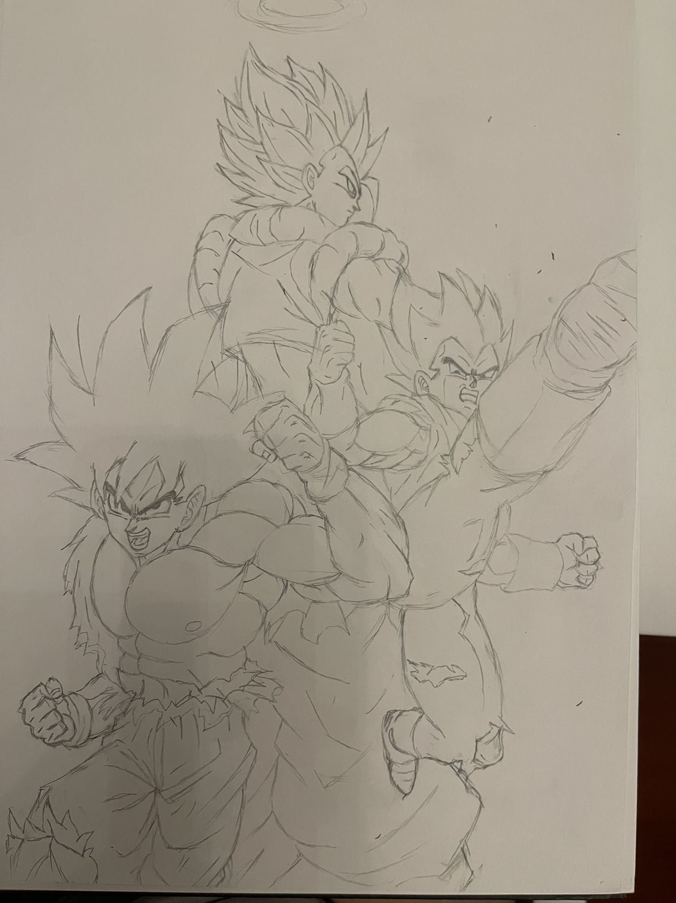
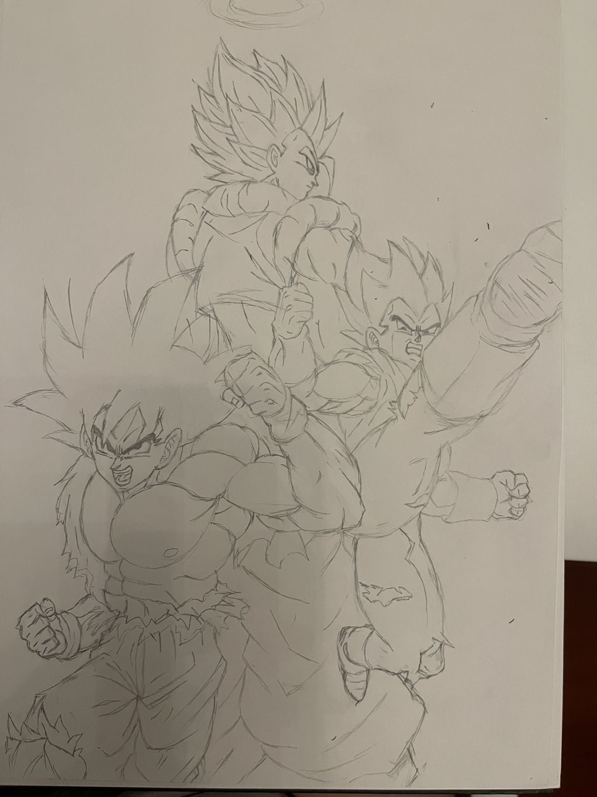

After going through each section, you can come back here and check off the little boxes. Have fun !
Everything changed at the age of 11, during grade five. This is the year I transferred from a pirate elementary school in China, to an elementary school in Canada called MarlBorough Elementary. As any other new kid in the environment, I was having trouble making friends not only because of the language differences, but also I was suffering through social anxiety. I was afraid to talk to other people, sometimes even when they looked back at me, I thought I did something wrong. In other words, things were not going very well. Since I had no one to talk to, I had to find something fun to do by myself, which is when I decided to watch some shows on TV. This is a time period when the computers were not as advanced, so most families were still watching TVs. After scrolling through many channels, I saw an anime. The framework and animation caught my attention instantly. It was a scene where people are fighting a giant monster, a very generic scene in most fiction movies, but the use of coloring and blade effects made it irresistible for me as a kid. At the time I had no idea what the show was called, and had no clue of researching it online because it was voiced in Japanese, and I couldn't remember what the lines were saying. Therefore, I looked up the channel I was looking at, and scrolled through the entire channel's scheduled playlist, and found the name of the anime. “Sword Art Online”.
Addiction is something very difficult to leave behind once you get one. As a grade five student, I didn't have much control of myself when watching anime. “Sword Art Online” was the first anime I watched, it wasn’t very long. At the time it only had two seasons, each with 24 episodes, each episode was around 25 minutes long, so it only took me around 2 weeks to finish the entire show. After finishing the show, I was desperate to know what happens after, but there was no news of season three coming out any time soon. However, this is also when I discovered that many animes originate from a light novel or a comic, which is when I began to read the light novel of sword art online, and eventually I was truly done with the story. Excited for what other stories and anime re possibly out there, I continued to look over articles and video games about anime recommendations. Watching a new series is a similar experience of me getting to know a new friend, understanding the plot, and the characters, the art style, etc. Even though I wasn’t able to make any friends at the school, perhaps making virtual friends wasn’t so bad either. Finally, at some point I realized, I have become an anime fan.
Since I started to watch anime I began to have hope in daily life. I was excited to go home after school, motivating myself to get the work done faster, and be more productive in doing chores, so I can have more time to watch anime. My mom was also happy that I started to smile a lot more than usual. In the long history of me watching anime, I have encountered many ones that inspired me to invest in a hobby. For instance, I started playing basketball after watching “Slam Dunk” and “Kuroko no Basket”. I became interested in soccer after watching “Inazuma Eleven”. Thanks to these series, I managed to make some friends in real life. Out of all o f these series, the most important one would be the most classic anime series of all time, “Dragon Ball”. This beautiful series influenced me into an art major. I admired the art style of Akira Toriyama, and started to mimic a lot of his drawings. Eventually I discovered that perhaps I like doing this, and I should continue to make these drawings when I grow up, so here I am now. In addition, I am also able to speak Japanese now, thanks to all these years of listening to it. I can watch most anime series without subtitles at this point.
Feel free to leave a comment and share your thoughts on the website or the story in general